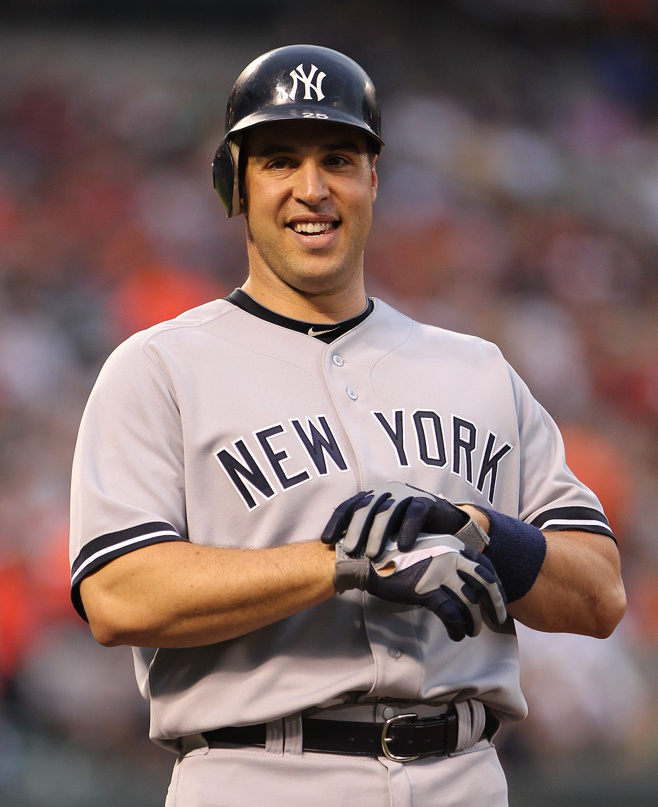
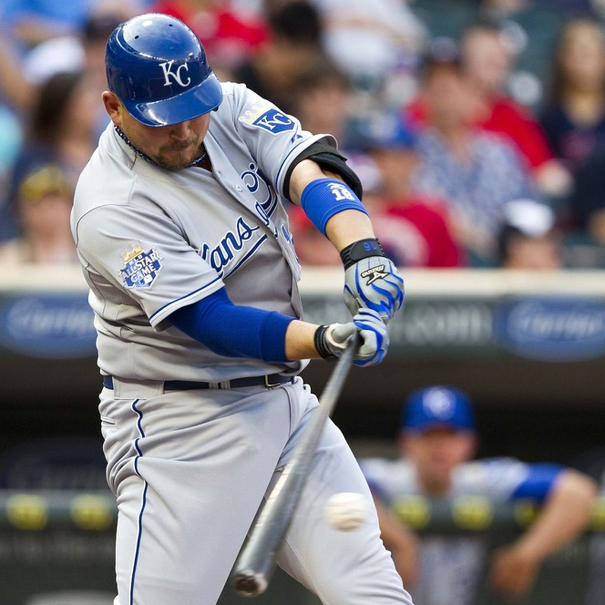
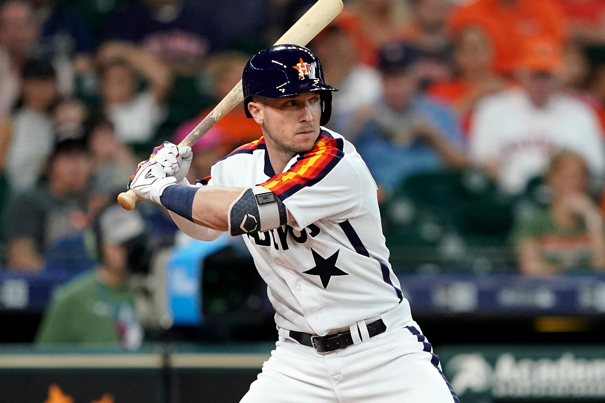

2011
Mark Teixeira hit 39 home runs with 111 RBI, and C.J. Wilson struck out 206 batters as Frank's team edged out the Onionheads and Siberian Express.
The title was Frank's first since joining the league in 1992, and coincided with the Cardinals' 11th World Series championship. Joel Hanrahan saved 39 games,
and the team survived the preseason loss of Adam Wainwright with an arm injury.
Key performers

- Mark Teixeira
- C.J. Wilson
- Joel Hanrahan

2012
Athletes Anonymous made it back-to-back championships, led by Billy Butler's 29 homers and 107 RBI.
Kyle Lohse had the best season of his career with an ERA of 2.86, and Matt Holliday batted in 101 runs with a .292 batting average.
Just like in 2011, Miguel Montero chipped in solid numbers at catcher.
Key performers

- Billy Butler
- Matt Holliday
- Kyle Lohse

2019
Jorge Soler clubbed 48 home runs to go along with Alex Bregman's 41, as Athletes Anonymous edged out longtime nemesis Smrje in the
final week of the season. Gerrit Cole lived up to his $3 contract by winning 20 games and striking out 326 batters.
Key performers

- Alex Bregman
- Jorge Soler
- Gerrit Cole